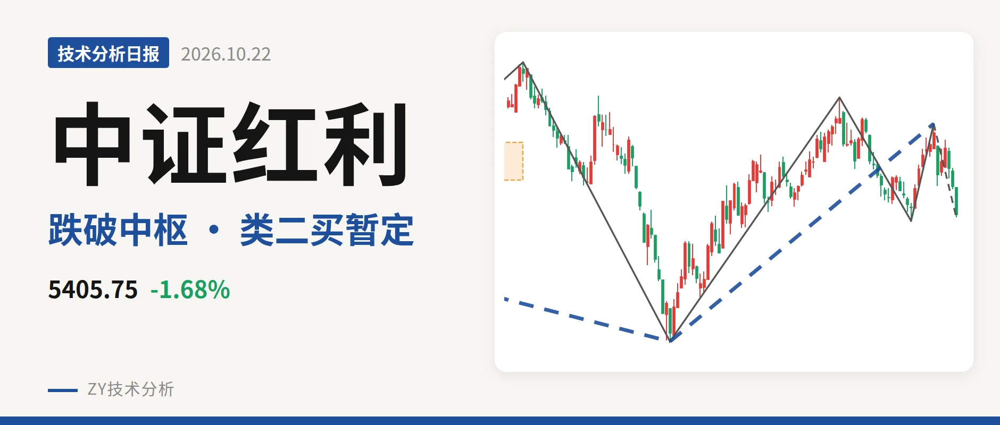
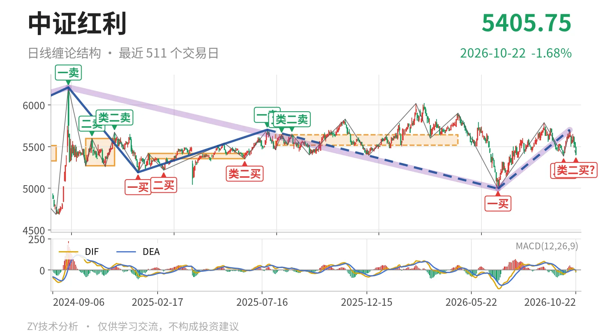
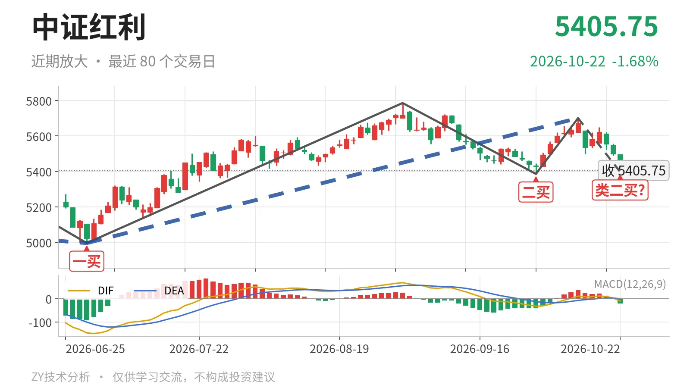

中证红利｜跌破日线中枢下沿，5397点暂定类二买

最近日线中枢 5518.46—5639.99点，收盘位于中枢之下
一句话：日线上涨段回踩二买附近，中枢下沿失守，力度未放大
🧭 走势结构：日线上涨段回撤，回落笔未结束
更大级别仍处在2022年11月以来的大区间震荡格局里，2024年10月8日高点6209.67点与2026年6月30日低点4995.49点之间没有形成新的线段级趋势。日线线段上，2025年7月23日至2026年6月30日的下跌段已被6月30日一买截断，6月30日至10月14日的上涨线段走出三笔：6月30日至9月1日上涨笔、9月1日至9月29日下跌笔、9月29日至10月14日上涨笔。当前10月14日至10月22日的下跌笔还在延续，价格回到5701.06点之下，但这段日线上涨结构还没有被破坏。

📉 中枢与位置：跌破最近中枢下沿，跌进前一个中枢
最近一个日线笔中枢是2025年8月4日至2026年4月30日的5518.46—5639.99点，中轴5579.23点，尚未完成。最新收盘5405.75点已低于下沿5518.46点约2.0%，处于中枢下方。这个中枢相对2025年1月27日至2026年6月23日的5353.68—5416.65点中枢是上移的，但当前这笔回落把价格重新压回前一个中枢内部。也就是说，中枢上移被这次回踩打断，结构更接近回到5353—5416点区间做扩展，而不是直接延续单边回落。
🎯 买卖点：10月22日类二买暂定，9月29日二买是关键
日线笔级别上，6月30日一买对应4995.49点，9月29日二买对应5386.04点。10月22日低点5397.45点走出类二买形态，但所在10月14日至10月22日下跌笔没有结束，只能算暂定类二买。若这一笔继续下探并跌破5386.04点，9月29日二买就只对应更小级别的反抽，6月30日以来的上涨段也会被破坏；若价格维持在该点上方，这个类二买还能保留。

⚡ 背驰：当前下探力度未超9月那笔
最近的同向比较，在9月1日至9月29日下跌笔与10月14日以来的下跌笔之间。前者从5786.14点跌到5386.04点，绿柱面积561，DIF低点-32.7；后者至今从5701.06点回到5397.45点，绿柱面积仅20，DIF低点-10.1，且还未终结。当前价格未破5386.04点，绿柱与DIF也没有新弱。由于后一笔没有结束，这个背驰只能作为当下参考；若后续绿柱快速放大，未新弱的读数会改变。
🔎 关键位置观察：看5518点反抽与5386点得失
上方先看最近中枢下沿5518点一线，下方看9月29日二买5386点一线。若反抽回不到5518点上方，结构上构成日线三卖；重新站上5518点，这次回踩更可能只是中枢扩展。若继续下探跌破5386点，6月30日以来的上涨段被破坏，日线重新进入更宽的5353—5416点甚至更低区域震荡。当前结构中性略偏弱，弱在已经失守最近中枢下沿，但未形成三卖，也未跌破二买，因此还不能定义为趋势性走坏。
⚠️ 本文为基于公开行情数据的缠论技术结构记录，由程序自动计算并生成，仅供学习交流，不构成任何投资建议。市场有风险，投资需谨慎。